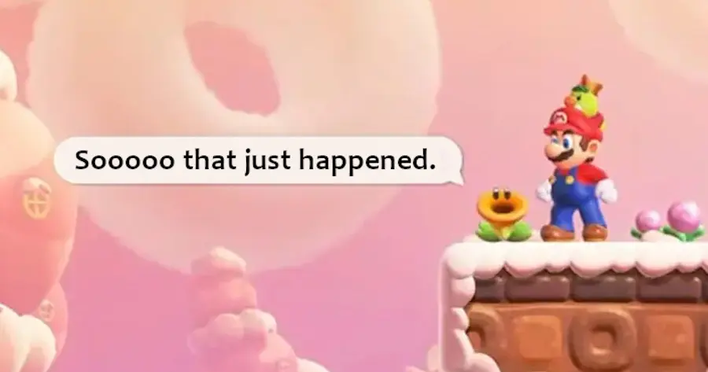
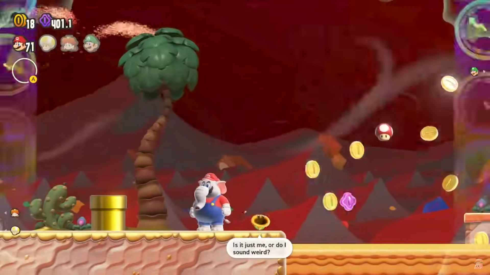
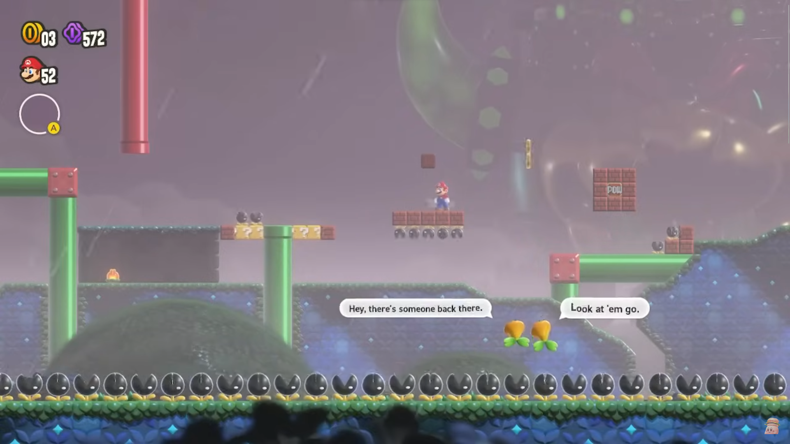
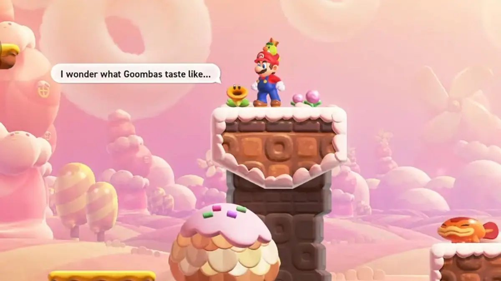

So what's the deal with Talking Flowers?
The Flowers are such a brilliant addition to the Mario Sidescroller formula. They add so much character and charm to the levels themselves. They really help you get in tune with the level designers. I almost like to think of them like little in character commentary nodes. The Flowers are really cute and are such a positive componet to the gameplay experience. I do think the choice in voice acting is a bit odd, but shockingly it still works.
|  | After mentioning how serine a gomba looks, this Talking Flower will comment on the player killing it. |
|  | This Talking Flower reacting to a wonder the causes the game to speed up dramatically. |
|  | A pair of Talking Flowers talking about the player in the background. |
|  | The Talking Flowers must be a bunch of foodies, because lots of them ponder the way things taste. |
And these flowers just show up everywhere, and have lots of great little skits. Many times a flower would say something that would get a chuckle out of me. Also I think those sentences should count towards my sentence limit because Talking Flowers. Talking Flowers and also I really am not that much of a fan of full length writing, I really enjoy coding though. Also, considering I've acomplished every other objective on the assignment I think It's only fair that some of the additional sensteces I wrote in the table should count for this paragaph even if it's not in the p tag, but I digress. I just find it annoying to agressvely add peroids to meet a sentense count, it just feels like a very unnaturall way of writing. But sometimes you gotta do what you gotta do. Like when I had to eat the Talking Flower when we were stranded on a Sunbaked Desert island. (That's a Super Mario Wonder reference if you didn't catch it) and listen it was me or him I think anyone would make the same desision I was forced to if you were in my shoes so I don't want to hear anyone judging me because sometimes in life it's kill or be killed.